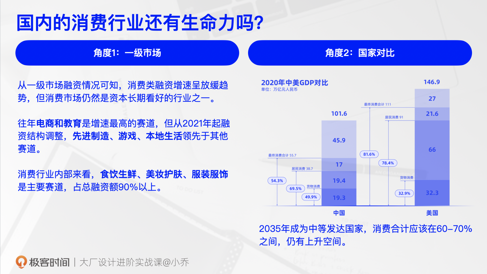
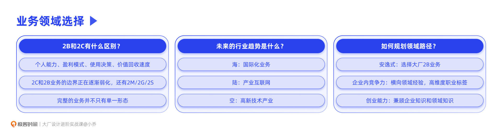

- 00 开篇词 升维思考，是设计师有效成长的第一步.md.html
- 01 业务周期：0-1-10-100-N的发展策略.md.html
- 02 商战模式：如何在商业竞争下突出重围？.md.html
- 03 市场洞察：如何找寻差异化撬动支点？.md.html
- 04 用户洞察：不懂用研的设计师不是好职场人.md.html
- 05 用户画像：是形式主义还是真的有效？.md.html
- 06 用户旅程：挖掘不同用户的核心机会点.md.html
- 07 职场晋升：看懂晋升的“游戏规则”.md.html
- 08 设计价值升级：五层进阶突破成长.md.html
- 09 基础价值 核心三原力：如何将需求转化为设计稿？.md.html
- 10 基础价值 第一性原理：从问题本质解决问题.md.html
- 11 基础价值 设计复盘：只是量化设计结果吗？.md.html
- 12 二级价值 负向网兜：如何全面发现负向问题？.md.html
- 13 二级价值 设计自驱：如何做好项目Owner？.md.html
- 14 二级价值 自驱合作：如何反内卷处理合作关系？.md.html
- 15 三级价值 增长误区：思维惯性陷阱和虚荣数据.md.html
- 16 三级价值 用户增长历程：AARRR是万能的吗？.md.html
- 17 三级价值 产品增长：如何做好产品创新？.md.html
- 18 三级价值 运营增长：如何自驱营销活动和投放？.md.html
- 19 三级价值 品牌增长 抢占心智，赢得人心红利.md.html
- 20 三级价值 增长实操：如何“步步为营”推动落地？.md.html
- 21 四级价值 L型赋能：让T型人才发挥更大价值.md.html
- 22 四级价值 “网状对比”解决共性痛点.md.html
- 23 五级价值 商业画布：设计师可以担任业务方吗？.md.html
- 24 五级价值 共创洞察：如何做好一次完善的workshop？.md.html
- 25 五级价值 领导力觉醒：写给新晋管理者.md.html
- 26 工作选择（上）：2B or 2C设计师？如何规划领域？.md.html
- 27 工作选择（下）：大厂 or 小厂？如何选择赛道？.md.html
- 28 人才地图：认知自我，成为高潜力人才.md.html
- 29 成长历程：如何从设计小白成长为团队负责人？.md.html
- 30 冰山模型：如何成为让面试官欣赏的“面霸”？.md.html
- 31 作品集指导：什么是面试官喜欢的作品集？.md.html
- 用户故事 什么是职场设计师进阶的正确姿势？.md.html
- 结束语 突破自我，成人达己.md.html
- 捐赠
26 工作选择（上）：2B or 2C设计师？如何规划领域？
你好，我是小乔。
恭喜你，已经完成了前面两大章节的学习，具备了商业和用户的洞察分析能力，也了解了设计价值的五级进阶。从这一节课开始，我们就来一起学习最后一个模块，揭开职场规则的面纱。
我们这一模块的内容，不止面向设计师，对于产品、运营、技术等各个互联网职能都是相通和适用的。这一模块一共6节课程：
前面两节课，我们会一起探讨如何选择业务和企业。我们都听过“选择比努力重要”这句话，判断力可以帮助我们少走许多弯路；
中间两节课，将重点讲述人才地图和团队内定位，便于我们对自己的认知和成长路径更为清晰；
最后两节课，我们会围绕作品集和面试重点来学习，帮助你充分理解企业招聘时到底想要怎样的人才，如何把自己的能力充分表达清楚。
这节课，我们先以2B和2C为切入点，来聊聊行业领域的情况，一起探讨两个问题：2B和2C领域，哪个更值得我们加入？我们是应该在某个细分领域深挖，还是横向拓展不同领域能力呢？
2B和2C有什么区别？
有许多设计小伙伴留言问过我，关于2B和2C该如何选择的问题，比如：
- 我做了10年2B设计，一直没什么进步，是否要转到2C业务去？
- 我听说互联网下半场，2B会比较吃香，我要转到2B业务吗？
在回答这些问题之前，我们先来看看2B和2C业务对我们设计师来说会有哪些差异，从而帮助我们做出选择。
2B业务，通常是指企业类产品或服务，比如企业邮箱、OA办公、ERP管理系统等；2C业务就是面向消费者用户的产品或服务，比如我们常用的淘宝、抖音、网易云音乐等等。当我们想要做出业务选择时，可以从以下4个方面来思考。
个人能力要求
相对来说，在洞察商业和用户的能力上，2C产品比2B产品的要求更高。2B产品的用户需求更为明确，通过用户访谈，可以清晰地知道用户行为和痛点，从而设计出满足用户需求的功能流程和可视化界面。而2C业务，如果想要做出更突出的成绩，就需要具备更强的商业分析、用户洞察、数据分析等能力，捕捉差异化创新点，做出超越竞品的用户体验。
但2B业务对于设计师来说，非常考验个人对业务的深耕程度。比如，自营电商业务需要去供应链看商品的质检入库流程，物流业务需要去仓库看商品的收发货流程，从而设计出高效、强大的智能化产品。尤其是进入互联网下半场后，产业互联网成为趋势，设计师需要真正了解所在的产业，才能提升竞争壁垒。
因此，我们在做选择时，需要根据自己擅长的能力，以及未来想提升的能力，来思考自己适合去什么领域。
盈利模式
C端产品通常下载和使用都免费，通过广告、佣金、会员等方式盈利，盈利的前提往往是用户规模较大。
而B端产品的基础通用能力通常也是免费的，收费的部分主要在于打包的增值服务。企业为了绑定一些重要客户，也会提供定制化服务。所以2B产品的盈利，依赖于客户的定制付费和订阅付费，订阅付费产品也就是大家常说的SaaS。我们在下节课也会讲到，选择2B企业要看它的ROI，如果为了满足客户的定制需求，持续断臂流血，这样的企业也是无法长久的。
网络上有些观点认为，B端产品更看重盈利，C端产品则看重日活，我们在之前的课程中讲过产品生命周期，在成熟期，盈利决定了2C业务的生死，因此我们不能武断地判定自己不适合做商业化就不选2B，因为2C也需要做商业化。我们要看两种盈利模式，我们更擅长做哪一种。
使用决策
2C产品是由消费者自己来决策使用的，我感兴趣，我就下载使用，不感兴趣了就不打开或者卸载。
但2B产品是由企业组织来决定是否使用的，偏重决策人的利益诉求，通常是由客户的采购部门和高管们一起决策。客户在参加竞标的选择中挑选愿意长期合作的企业，因此看重的不一定是产品价格或具体的体验，而是两家企业之间的关系、这个产品的美誉度、这家企业的可靠度等方面。
对我们设计师来说，如果你想去的2B业务，所在企业并没有非常强大的商务客户资源，在行业中也不具备口碑度，那就要谨慎选择了。
价值回收速度
从开发周期的角度来看，2C的开发周期通常较短，需要快速试验产品方向而不断迭代。也许只是比竞品早上线半个月，就能收获第一心智和海量用户，但同样也容易快生快死。而B端产品需求明确，体系复杂庞大，因此开发周期相对较长，通常需要几个月甚至一年作为开发周期，但稳定性较高。
从价值量化的角度来看，2C的衡量指标也更为直观和客观，比如DAU、转化率、留存率等；而2B产品呢，商业指标难以归因到是设计师的功劳，因此对我们设计师来说，主要依赖满意度、费力度等体验指标，以及用户对品牌的理解、认知等品牌指标。4种指标类型，我们也在之前的课程种讲过。
因此，对我们设计师来说，在价值回收速度方面，2C更有爆发增长的机会，而2B产品需要设计师有足够的耐心。
通过这4个方面的差异分析，相信你已经有了潜在判断。但我们要明白的是，随着行业的发展与融合，2C和2B业务的边界正在逐渐弱化，用户或客户也不再仅有C和B两种，还出现了更多角色，比如政府G端、工厂M端、供应链S端，因此除了2C、2B，还有2M、2S和2G。
还记得我们在上一章学习四级价值时，要通过产品化的方式达到降本提效的目标吗？我们会发现，原本是在做2C业务，但也许会涉及到B端的产品设计；原本是在做移动端的界面，但在自驱做产品化工具时，落地的产品也许是个PC端的中后台。
通常一个完整的业务并不只有单一形态，比如钉钉有服务企业的工具，也有针对政府业务的定制产品；电商有针对消费者的导购平台，也有针对卖家的服务；音乐有听歌找歌的消费者功能，也有针对音乐创作者的服务平台。以前，业内会说电商是针对买家和卖家的双边服务，但现在有了越来越多的三边、四边服务。
2B和2C哪个更值得去？
2B和2C业务哪个更值得去？这是许多设计师小伙伴都问过我的问题。
其实，随着行业的发展，2B和2C中还有许多细分领域，无法再以2B和2C的粗颗粒度去概括业务类型，并且2C、2B、2G、2M、2S等领域也在逐渐融合。比如2C也分为海外和国内业务，还有社交、电商、教育等等细分赛道；2B也分为给企业内的中后台、对外做营收的SaaS服务等等。所以，2B和2C，已经不再是我们选择赛道的判断依据。
既然业内已经不再适合以2B和2C作为分类维度了，而是要看到更细的颗粒度，那我们又该如何判断哪种业务更值得去呢？
这里，我给你提供两个判断依据：一个是一级市场对这个业务类型的青睐程度，也就是看融资的笔数和金额数；另一个是看我国和其他发达国家的横向对比，在这个赛道上是否还有空间。
接下来，我们就以国内的2C行业为例，看看这两个判断依据是如何运用的。
近几年，大家多少都能感受到云服务、SaaS服务、出海业务等词汇被高频提及，确实高新技术领域、产业互联网、出海业务，是未来10年的发展重点。有许多设计同学，一直以来都在做国内的2C产品，在行业趋势变革的情况下，产业互联网和出海业务兴旺，做国内2C业务的设计师该怎么办呢？要转行吗？
我们通过上述的两个判断依据，一起来看看国内的2C行业是否还有发展空间。通过一级市场融资和中外GDP消费类结构对比，就能看出2C行业的发展趋势。

- 判断依据1：一级市场
从一级市场融资情况可知，消费类融资增速呈放缓趋势，但消费市场仍然是资本长期看好的行业之一。只是消费行业内部的细分领域发生了结构上的变化，往年电商和教育是增速最高的赛道，但从2021年起融资结构调整，先进制造、游戏、本地生活领先于其他赛道。
我们可以看到很多大厂，都在进行业务调整。比如，字节跳动多次缩减了教育部门，大力扶持本地生活业务。
- 判断依据2：中外对比
我国规划在2035年成为中等发达国家，发达国家的消费合计占比通常在60-70%之间，而美国的消费占比在发达国家中处于偏高状态，高达80%以上；我国目前是50%以上，仍有上升空间。
因此从近几年来说，国内的消费行业仍然有发展趋势，只是细分赛道发生了变化。而我们设计师，如果想在互联网行业长期发展，持续在这个行业工作10年以上，就需要逐渐向更有发展空间的三大赛道倾斜，我们会在下节课重点讲解。
如何规划领域？
通过了解2B、2C对于我们设计师来说的区别和近几年的发展趋势后，也许你已经有了初步判断。先别着急，我们再来看看自己的目标是什么，也综合考虑未来的行业趋势，然后再做出选择。
我们每个人都有不同的职场目标，我也接受且尊重多元的价值观。比如，有的设计同学并不想那么累那么卷，觉得互联网红利已经消失殆尽，不如躺平，做到Work-life balance；也有设计同学的目标是充分成长，提升自己在行业内的竞争力，这样无论当前的企业发展如何，跳槽都有出路；同时，也有设计同学有创业梦想，进入企业只是想更了解相关业务，帮助自己积累未来创业的经验和人脉。
就像做业务一样，我们只有清楚了业务目标，才能针对目标，产出更适合的设计方案，目标不同则方案不同。对于我们选择具体的领域也是同理，目标不同，则选择不同。我们就以上面提到的3种不同目标来举例说明。
目标1：安逸式工作状态
首先，并不建议工作5年内的年轻设计师陷入摆烂状态，因为在行业收缩的情况下，被汰换的危险性较高。我们在晋升规则一课中讲过，能力对标阿里P6+以下的设计师，在整个行业内的竞争力相对来说不高，较容易找到替代人才。因此当能力和潜力不达预期时，就会成为被淘汰的人选。
但如果不想摆烂，只是想安逸轻松一点，实现work-life balance，那可以选择2B业务，相对来说动荡没有那么大，业务也比较稳定。不用经历国内企业的2C业务在引入期的生死存亡，和成熟期的人人内卷；也不用承受外企的2C业务撤离中国市场的风险。
但想要在2B业务做出成绩并不容易，要高度理解细分赛道的业务并找出机会点，清晰产品的优势和业内的竞争力，否则就会沦为画图表的工具人。2B业务也有不同类型，主要有3大类：企业内部的基础能力中后台、企业数字化SaaS产品、传统的2B定制产品。其中，SaaS产品相对来说最有前景，因为有明确的营收价值。所以即便要选择安逸的工作方式，也建议优先考虑可衡量价值的类型。
目标2：提升自我竞争力
如果目标是想提升自己在设计行业内的竞争力，除了有扎实的设计能力外，更要扩宽自己的横向领域经验，形成更高维度的职业标签。
什么是职业标签呢？就是他人对我们的能力印象。比如你的作品集里都是2B的项目，那面试官会形成一个印象叫作：2B设计师。那什么是更高维度的职业标签呢？就是能力标签不要停留在业务类型上，而是关于你的能力本身，比如：业务经验丰富、项目完整度高、自驱能力强、逻辑思维清晰、有商业sense等等。
由于行业总是在动态变化的，我们可以知道短期的风口是什么，但很难预测几年后的风口。因此，让自己成为能力包容性较高的设计师是十分必要的。无论之后行业如何变化，因为我们的能力多元、包容性强，什么业务都可以做好。
以提升自我竞争力为目标的设计师，建议不要局限自己的业务领域，尤其在年轻时要尽量多体验不同的业务类型和企业模式。以需求度广的业务领域为主，这样经验可复用的概率更高。比如电商业务，从“2021上半年中国电商上市公司市值排行榜”来看，超过千亿的企业就有10家之多。
以我自己为例，我曾经的职业规划和成长目标就是长期待在企业里，使自己具备高潜力和高竞争力。因此我的工作经历相对比较丰富，做过企业办公、电商、社交等不同领域的业务。过往虽然有连续6年都处于电商行业，但也注重吸收不同的能力经验，比如前台和中后台都做过，初创业务和成熟业务都待过，线下店和供应链也都负责过。
横向对比我其他在大厂里做中高管的朋友们，他们过往的经验也都丰富多元，比如做过打车产品、IM产品、新闻资讯产品等等，在外企、国内BAT大厂、国内小企业都待过，也有人曾经创业过。
但我们要明白的是，丰富眼界并不等于短期跳槽。在每家企业只待1年就跳槽，即便对于吸收能力很强的同学来说，也很难将这个领域的经验和所在企业的管理方式吸收透彻，建议尽量在2-3年后再跳槽。
如果你在大厂，其实只要转岗就能满足变换领域的需求，比如我有很多TikTok的朋友，当工作没有更大挑战和快速成长后，他们就会转岗到字节的其他创业业务中。通常大厂内都有发起转岗的要求，比如要在现有业务待满1年或2年以上，绩效表现在中等以上等等。
目标3：提升创业能力
对于目标是提升职场能力、实现未来创业的人才，需要同时兼顾企业知识和领域知识。
如果对未来创业的领域已经非常明确，可以选择中大厂的相关创业团队，相当于借助公司的资源完成创业试水。比如想做可视化产业互联网，可以选择阿里云、华为云、火山引擎等部门；想做社交类产品，可以选择腾讯或字节；想做国际化电商业务，可以选择Shopee、SHEIN等企业。
如果对于创业领域还不是非常清晰，那就和案例2的建议一致，去不同业务、不同企业多学习实践。重在学会职场的软实力和硬实力，而并非业务本身。因为一旦创业，就更需要一人顶多人用，而非仅仅是设计师的身份。
大部分设计师起初的职场目标都是第2种，但随着工作年限的增加，就会向目标1和目标3摆动。我有许多同事跳槽去了知名外企，过起了每天只需忙碌2小时的生活，可以充分陪伴孩子；也有许多同事选择创业，有的做了知识博主和私域培训，有的放弃了7位数年薪，运用互联网思维创立了预制菜品牌，还有许多朋友踩在当下十年的风口上，在做企业SaaS服务和产业互联网，这些朋友曾经都是设计师出身。无一例外的是，他们现在取得的成功，都与过往积累的工作能力息息相关。
我的社交圈里，有一半以上的好朋友都在创业，并且比例还在逐渐增加。有的每年盈利大几百万，有的盈利大几千万。但盈利只是一种交代，更重要的是，他们在创业的过程中充分释放了自己的能量，有巨大的获得感和满足感。不再会有我可以造飞机，却在企业里拧螺丝钉的憋屈感。
因此，如果我们有着更高的抱负，都不必限制在2B、2C或是其他类型的业务里，因为成功的业务往往是多面的，符合行业发展趋势的。能让我们不迷茫、有获得感的前提，就是具备的能力符合自己的目标。
今日小结
今天，我们一起了解了2B和2C业务的差异，以及对我们设计师来说的区别。我们一起内观了自己的需求，也外观了行业的发展趋势。我们也明白了业务的分类维度是多元的，远远不止2B和2C这么简单。相信现在的你，对于开头的两个问题，已经可以做出判断了。

回顾我们这节课的内容，不知你是否发现，在考虑领域选择时，不管是业务对个人的要求，还是自身的职业目标和行业的趋势变化，这些都没有涉及到我们个人的兴趣。那在选择业务时，要不要考虑自己的兴趣呢？
我的建议是不要过度考虑。培养自己的爱好可以选择兴趣，但选择工作的底层逻辑是自身能力和行业潜力。况且，部门和业务的变动是频繁的，也许你起初在一个感兴趣的业务中，但经过组织架构调整，就会接触自己不感兴趣的业务。
随着职场成熟度的提升，我们会发现，能客观地把不感兴趣的业务做好，甚至能把别人做不好的业务做好，更是能力强的证明。我曾经在阿里的一位同事，就是被动从核心业务调去了一个难度大且相对边缘的业务，在项目做成功后就晋升了P9。
相信到此为止，你已经对于2B和2C的业务有了较深的理解，也有了自己的判断。下节课，我们将一起探讨如何选择企业和赛道。
互动时刻
回顾你过往的工作经历，是否遇到过自己不喜欢的业务呢？你是如何处理的呢？你会如何规划自己未来的领域选择呢？
欢迎把你的经历和思考在留言区分享出来，与我和其他同学一起探讨。我们建了一个读者交流群，欢迎你的加入！如果你觉得有所收获，也欢迎把文章分享给你的朋友一起学习。我们下节课见。
© 2019 - 2023 Liangliang Lee. Powered by gin and hexo-theme-book.